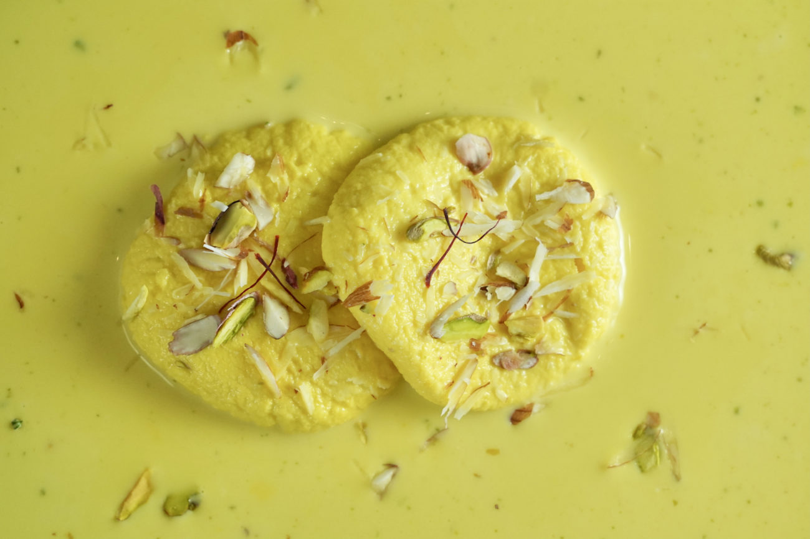

Rasmalai

Description
This is a homemade recipe for a famous Indian sweet dessert
Enjoy the recipe!
Ingredients
- 2 litre full cream milk
- ½ litre fat free milk
- 250g sugar
- Saffrons
- Elaichi
- Paneer
- Pista
Steps
- Warm 2 litre full cream milk to the point that it becomes half
- After it becomes half, add 5 spoons sugar and add 10-12 Saffrons
- Keep it cool in fridge for 5-6 hours
- Make Paneer ½ fat free milk
- 1 cube of Amul Paneer packet
- Mix those two paneer with reverse mode
- Batt Paneer on the plate
- Mix 1½ teaspoon cornflour
- Mix proper and prepare a proper dough alteast for 10 minutes
- Divide it into equal parts
- Add 1 small boul sugar and 5 warm water in Pan
- Add Paneer Pedas in the pan
- Without covering cook it for 5 minutes
- Lightly turn and cook for another 5 minutes
- Again turn and now cover with lid and cook for 5 minutes
- Again turn and with covered lid and cook for 5 minutes
- If they are doubled the size, stop the gas
- Keep it till cool and transfer it into milk
- Serve it with Pista